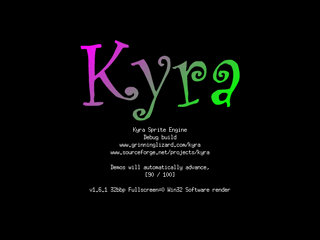
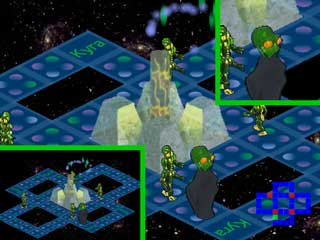
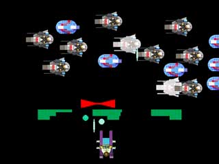
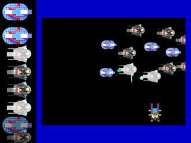
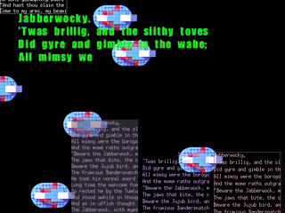
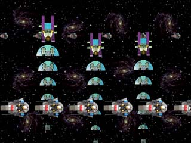
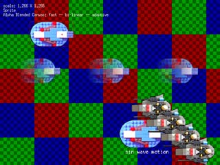
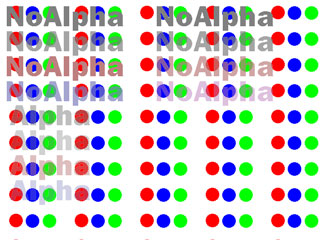
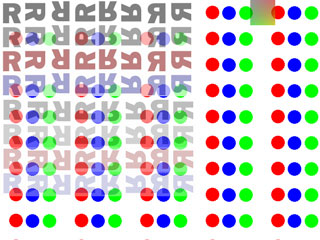

|
|
Demo
After Installation this section explains what you see in the demo. The demo is used to both show off functionality and to test the engine. Press the spacebar to move between screens of the demo, or a timer will advance for you. With some versions, these screens are in a different order.
Title Screen

The title fades in from black and displays information about Kyra and the current build.
It also tests some subtle color transformations.
BEM Demo

The Sprites are unused graphics from BEM: Bug Eyed Monsters from Outer Space. The background is made up of one repeated "space" image tile, rotated in all 8 possible configurations.
The floor is made up of isometric sprites that the encoder generated from a rectangular source image. Rotation was applied by the encoder as well. Automatic generation of isometric images is a new feature in 1.6.1.
The Drone (4 arms and 2 legs) and the Brain (no arms and floats) are both stop-frame animated Sprites. The Drone has 6 frames of animation in 4 diagonal directions.
In the lower right, the map of the screen is drawn with a Canvas.
The alien object thing in the center of the room cycles through color and alpha transformations. The Drones and Brains are affected by the transformation as well, and the effect becomes more dramatic when they are closer to the alien object thing. You can see in the picture above that the Brain BEM nearest the object is semitransparent.
Every so often, an alien will disappear and particles shoot into the air. (Don't worry, it re-appears in a few moments.) The particles are a nice example of using alpha blending and an alpha transform. The particle locations are computed in 3D coordinates and mapped to isometric coordinates using the GlIsoMath class.
BEM Part 2

The 2nd BEM (Bug Eyed Monsters) screen has everything the first had, plus a bunch of extra stuff. This is an example of using "windowed views." This screen actually uses 5 windows: the lower left mini-map, the upper right zoom view, and 3 bands in the middle. Since no views may overlap, 3 windows are needed to form the irregular main view.
The lower left zoomed-out view of the entire map uses cached scaling. The sprites in this image are scaled at very high quality and recompressed so they can be rendered quickly. Consequently, the zoom for this window can't be changed.
The upper right view takes the opposite approach: it zooms in and out in real time. The quality is slightly less, but the resulting motion is still pretty good. Note this window tints red when it zooms in and blue when it zooms out.
Space Shooter Game

A simple space shooter, reminiscent of games of yore, is used to demonstrate collision detection. The space dude at the bottom of the screen moves left and right, shooting at the space ships above. The green blocks stop the shots, but are eaten away when hit. The red shield moves back and forth -- it also stops shots, but does not take damage.
Tests Sprite - Sprite collision (bullets, triangle ships), Sprite - Scaled Sprite collision (bullets, blue ships), Sprite - Canvas collision (bullets, green blocks), and Sprite - Scaled Canvas collision (bullets, red shield).
Space Shooter Part 2

On the left is the roster of ships in the game. As they get blown up, they are removed from the roster and the space is filled in. On the right is the previous shooter game, simplified and scaled.
This is a very advanced used of Kyra. Like the BEM demo, this uses multiple windows. All Kyra indows (for the same Engine instance) are views of the same ImageTree. Different transformations - color, translation, scaling - can be applied, but all windows display the same data. This demo uses radically different transformations to show the game on the right and the roster on the left..
Have Space Armada, Will Travel

There are a moderate number of large Sprites in this demo, spread out across a virtual window that is 4 times wider than the physical window. In the 4th screen, the camera is fixed as the spaceships fly under the camera. In the 5th screen, the camera tracks the big ship, and gives an example of how Kyra can be used for scrolling.
The medium sized blue ships are an example of a hierarchical object. The "spaceship" Sprite has in "insignia" child, that is color transformed. So the insignia moves with the sprite can can be a different color for each spaceship. (The insignia is a triangle in the middle of the ship.)
The ships are cache scaled to reflect their distance from the viewer.
In the first screen, the ships move and space stays constant. In the second, the camera tracks the largest space ship.
Text

A whole bunch of text is on this screen. Proportional, anti-aliased text (the larger green text) as well as small fixed width text in the background. The background text is outlined by boxes. A festival of text!
A rather more subtle test is that the poem is loaded from the dat file as a binary and text user defined resource.
SinWave

This oddly named demo uses real time scaling to a horizontal row of space ships at 2 z-depths. Tinting is also applied as a function of z-depth. The vertically moving trains are scaled in real time, and their tints change as they get closer to the user.
Scaling Calibration

it ain't a pretty test...but it is useful. Tests alignment and scaling of a single object, and the scaling of object relative to each other.
The top blue spaceship is a sprite. The 3 beneath it are actually canvases (that have had the sprite drawn to them) with an alpha channel applied. They are scaled at 3 different qualities.
Sprite Calibration

Is a test image. It verifies that the transformation code is working properly. The 4 "No Alpha"s at the upper left are Sprites, with the following transformations:
- No transformation.
- Alpha.
- Color tint.
- Alpha and color.
The "Alpha"s below the transforms are the same transformations, to a source bitmap that has a constant per-pixel alpha. (So the bitmap contains an alpha channel, which is different than an alpha being applied to an entire bitmap.) The "No Alpha" in the upper right uses the same transformations, but each one is cumulative. So the bottom sprite has been alpha, color, then alpha and color transformed.
Tile Calibration

Tests the transformations on a Tile. The first 4 rows are a Tile with no alpha channel, and the next 4 are a Tile with a constant per-pixel alpha. The block in the upper right is a Canvas. The Tiles will scale over time.
Options
The demo can be run with several
command line options, for example:
krdemo -d32
-f
-o use OpenGL
Will run the demo using an OpenGL surface, if possible. Sometimes this only works in fullscreen mode. (-f)
-d depth
Requests SDL set a particular screen depth, generally 16, 24, 32. You may not get it depending on your hardware. Kyra only works for direct color modes. Color depth can have a large impact on engine performance.
-s speedtest
Runs the demo as a speed test: the fastest possible framerate. The results of the test will be dumped in the file testdata.txt. Useful for testing the speed of a machine and the effects of depth and fullscreen. Very useful for testing how changes to the code affect the framerate.
-f fullscreen
Sends a request to SDL to run fullscreen. Useful in conjunction with depth.